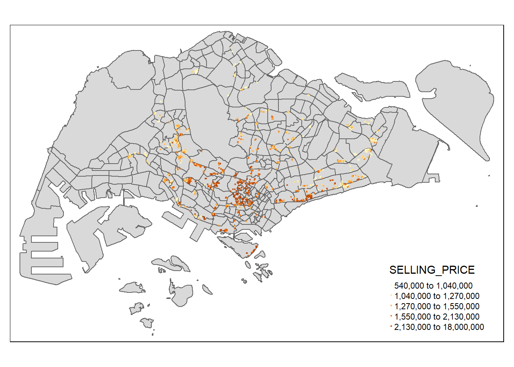
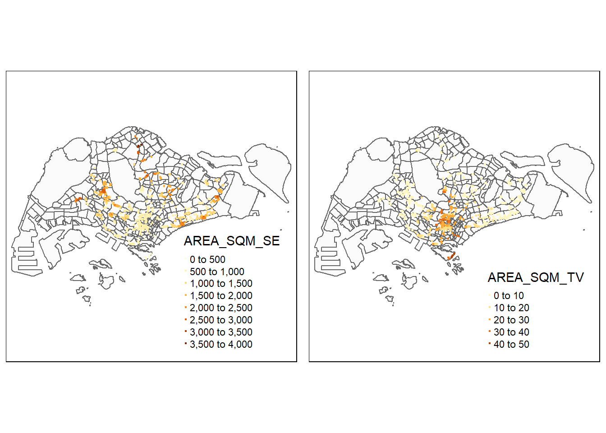

pacman::p_load(olsrr, corrplot, ggpubr, sf, spdep, GWmodel, tmap, tidyverse, gtsummary)Hands-on Exercise 8
Geographically Weighted Regression (GWR)
Geographically weighted regression (GWR) is a spatial statistical technique that takes non-stationary variables into consideration (e.g., climate; demographic factors; physical environment characteristics) and models the local relationships between these independent variables and an outcome of interest (the dependent variable).
GWmodel provides a collection of localised spatial statistical methods:
GW summary statistics,
GW principal components analysis,
GW discriminant analysis, and
Various forms of GW regression; some of which are provided in basic and robust (outlier resistant) forms.
Commonly, outputs or parameters of the GWmodel are mapped to provide a useful exploratory tool, which can often precede and direct a more traditional or sophisticated statistical analysis.
Imports
Geospatial data
MP14_SUBZONE_WEB_PL in ESRI shapefile format is used in this exercise. The shapefile consists of URA Master Plan 2014’s planning subzone boundaries, represented by Polygon features. The GIS data is in svy21 projected coordinate systems.
Import the data:
mpsz = st_read(dsn = "data/geospatial", layer = "MP14_SUBZONE_WEB_PL")Reading layer `MP14_SUBZONE_WEB_PL' from data source
`C:\Users\pwnyt\Documents\GitHub\415\HOE\ex8\data\geospatial'
using driver `ESRI Shapefile'
Simple feature collection with 323 features and 15 fields
Geometry type: MULTIPOLYGON
Dimension: XY
Bounding box: xmin: 2667.538 ymin: 15748.72 xmax: 56396.44 ymax: 50256.33
Projected CRS: SVY21The above shows that the imported MP14_SUBZONE_WEB_PL shapefile, mpsz, is a simple feature object, with the geometry type multipolygon. It also does not have EPSG information.
Updating CRS
Update with the correct EPSG code:
mpsz_svy21 <- st_transform(mpsz, 3414)st_bbox(mpsz_svy21) #view extent xmin ymin xmax ymax
2667.538 15748.721 56396.440 50256.334 Aspatial data
Import the data:
condo_resale = read_csv("data/aspatial/Condo_resale_2015.csv")Rows: 1436 Columns: 23
── Column specification ────────────────────────────────────────────────────────
Delimiter: ","
dbl (23): LATITUDE, LONGITUDE, POSTCODE, SELLING_PRICE, AREA_SQM, AGE, PROX_...
ℹ Use `spec()` to retrieve the full column specification for this data.
ℹ Specify the column types or set `show_col_types = FALSE` to quiet this message.Check the imported data:
glimpse(condo_resale)Rows: 1,436
Columns: 23
$ LATITUDE <dbl> 1.287145, 1.328698, 1.313727, 1.308563, 1.321437,…
$ LONGITUDE <dbl> 103.7802, 103.8123, 103.7971, 103.8247, 103.9505,…
$ POSTCODE <dbl> 118635, 288420, 267833, 258380, 467169, 466472, 3…
$ SELLING_PRICE <dbl> 3000000, 3880000, 3325000, 4250000, 1400000, 1320…
$ AREA_SQM <dbl> 309, 290, 248, 127, 145, 139, 218, 141, 165, 168,…
$ AGE <dbl> 30, 32, 33, 7, 28, 22, 24, 24, 27, 31, 17, 22, 6,…
$ PROX_CBD <dbl> 7.941259, 6.609797, 6.898000, 4.038861, 11.783402…
$ PROX_CHILDCARE <dbl> 0.16597932, 0.28027246, 0.42922669, 0.39473543, 0…
$ PROX_ELDERLYCARE <dbl> 2.5198118, 1.9333338, 0.5021395, 1.9910316, 1.121…
$ PROX_URA_GROWTH_AREA <dbl> 6.618741, 7.505109, 6.463887, 4.906512, 6.410632,…
$ PROX_HAWKER_MARKET <dbl> 1.76542207, 0.54507614, 0.37789301, 1.68259969, 0…
$ PROX_KINDERGARTEN <dbl> 0.05835552, 0.61592412, 0.14120309, 0.38200076, 0…
$ PROX_MRT <dbl> 0.5607188, 0.6584461, 0.3053433, 0.6910183, 0.528…
$ PROX_PARK <dbl> 1.1710446, 0.1992269, 0.2779886, 0.9832843, 0.116…
$ PROX_PRIMARY_SCH <dbl> 1.6340256, 0.9747834, 1.4715016, 1.4546324, 0.709…
$ PROX_TOP_PRIMARY_SCH <dbl> 3.3273195, 0.9747834, 1.4715016, 2.3006394, 0.709…
$ PROX_SHOPPING_MALL <dbl> 2.2102717, 2.9374279, 1.2256850, 0.3525671, 1.307…
$ PROX_SUPERMARKET <dbl> 0.9103958, 0.5900617, 0.4135583, 0.4162219, 0.581…
$ PROX_BUS_STOP <dbl> 0.10336166, 0.28673408, 0.28504777, 0.29872340, 0…
$ NO_Of_UNITS <dbl> 18, 20, 27, 30, 30, 31, 32, 32, 32, 32, 34, 34, 3…
$ FAMILY_FRIENDLY <dbl> 0, 0, 0, 0, 0, 1, 1, 0, 1, 1, 0, 0, 0, 0, 0, 0, 0…
$ FREEHOLD <dbl> 1, 1, 1, 1, 1, 1, 1, 1, 1, 0, 1, 1, 1, 1, 1, 1, 1…
$ LEASEHOLD_99YR <dbl> 0, 0, 0, 0, 0, 0, 0, 0, 0, 0, 0, 0, 0, 0, 0, 0, 0…head(condo_resale$LONGITUDE) #see the data in XCOORD column[1] 103.7802 103.8123 103.7971 103.8247 103.9505 103.9386head(condo_resale$LATITUDE) #see the data in YCOORD column[1] 1.287145 1.328698 1.313727 1.308563 1.321437 1.314198summary(condo_resale) LATITUDE LONGITUDE POSTCODE SELLING_PRICE
Min. :1.240 Min. :103.7 Min. : 18965 Min. : 540000
1st Qu.:1.309 1st Qu.:103.8 1st Qu.:259849 1st Qu.: 1100000
Median :1.328 Median :103.8 Median :469298 Median : 1383222
Mean :1.334 Mean :103.8 Mean :440439 Mean : 1751211
3rd Qu.:1.357 3rd Qu.:103.9 3rd Qu.:589486 3rd Qu.: 1950000
Max. :1.454 Max. :104.0 Max. :828833 Max. :18000000
AREA_SQM AGE PROX_CBD PROX_CHILDCARE
Min. : 34.0 Min. : 0.00 Min. : 0.3869 Min. :0.004927
1st Qu.:103.0 1st Qu.: 5.00 1st Qu.: 5.5574 1st Qu.:0.174481
Median :121.0 Median :11.00 Median : 9.3567 Median :0.258135
Mean :136.5 Mean :12.14 Mean : 9.3254 Mean :0.326313
3rd Qu.:156.0 3rd Qu.:18.00 3rd Qu.:12.6661 3rd Qu.:0.368293
Max. :619.0 Max. :37.00 Max. :19.1804 Max. :3.465726
PROX_ELDERLYCARE PROX_URA_GROWTH_AREA PROX_HAWKER_MARKET PROX_KINDERGARTEN
Min. :0.05451 Min. :0.2145 Min. :0.05182 Min. :0.004927
1st Qu.:0.61254 1st Qu.:3.1643 1st Qu.:0.55245 1st Qu.:0.276345
Median :0.94179 Median :4.6186 Median :0.90842 Median :0.413385
Mean :1.05351 Mean :4.5981 Mean :1.27987 Mean :0.458903
3rd Qu.:1.35122 3rd Qu.:5.7550 3rd Qu.:1.68578 3rd Qu.:0.578474
Max. :3.94916 Max. :9.1554 Max. :5.37435 Max. :2.229045
PROX_MRT PROX_PARK PROX_PRIMARY_SCH PROX_TOP_PRIMARY_SCH
Min. :0.05278 Min. :0.02906 Min. :0.07711 Min. :0.07711
1st Qu.:0.34646 1st Qu.:0.26211 1st Qu.:0.44024 1st Qu.:1.34451
Median :0.57430 Median :0.39926 Median :0.63505 Median :1.88213
Mean :0.67316 Mean :0.49802 Mean :0.75471 Mean :2.27347
3rd Qu.:0.84844 3rd Qu.:0.65592 3rd Qu.:0.95104 3rd Qu.:2.90954
Max. :3.48037 Max. :2.16105 Max. :3.92899 Max. :6.74819
PROX_SHOPPING_MALL PROX_SUPERMARKET PROX_BUS_STOP NO_Of_UNITS
Min. :0.0000 Min. :0.0000 Min. :0.001595 Min. : 18.0
1st Qu.:0.5258 1st Qu.:0.3695 1st Qu.:0.098356 1st Qu.: 188.8
Median :0.9357 Median :0.5687 Median :0.151710 Median : 360.0
Mean :1.0455 Mean :0.6141 Mean :0.193974 Mean : 409.2
3rd Qu.:1.3994 3rd Qu.:0.7862 3rd Qu.:0.220466 3rd Qu.: 590.0
Max. :3.4774 Max. :2.2441 Max. :2.476639 Max. :1703.0
FAMILY_FRIENDLY FREEHOLD LEASEHOLD_99YR
Min. :0.0000 Min. :0.0000 Min. :0.0000
1st Qu.:0.0000 1st Qu.:0.0000 1st Qu.:0.0000
Median :0.0000 Median :0.0000 Median :0.0000
Mean :0.4868 Mean :0.4227 Mean :0.4882
3rd Qu.:1.0000 3rd Qu.:1.0000 3rd Qu.:1.0000
Max. :1.0000 Max. :1.0000 Max. :1.0000 Convert to sf
The code below converts condo_resale dataframe into a simple feature dataframe by using st_as_sf() from sf.
condo_resale.sf <- st_as_sf(condo_resale,
coords = c("LONGITUDE", "LATITUDE"),
crs=4326) %>%
st_transform(crs=3414)head(condo_resale.sf)Simple feature collection with 6 features and 21 fields
Geometry type: POINT
Dimension: XY
Bounding box: xmin: 22085.12 ymin: 29951.54 xmax: 41042.56 ymax: 34546.2
Projected CRS: SVY21 / Singapore TM
# A tibble: 6 × 22
POSTCODE SELLING_PRICE AREA_SQM AGE PROX_CBD PROX_CHILDCARE PROX_ELDERLYCARE
<dbl> <dbl> <dbl> <dbl> <dbl> <dbl> <dbl>
1 118635 3000000 309 30 7.94 0.166 2.52
2 288420 3880000 290 32 6.61 0.280 1.93
3 267833 3325000 248 33 6.90 0.429 0.502
4 258380 4250000 127 7 4.04 0.395 1.99
5 467169 1400000 145 28 11.8 0.119 1.12
6 466472 1320000 139 22 10.3 0.125 0.789
# ℹ 15 more variables: PROX_URA_GROWTH_AREA <dbl>, PROX_HAWKER_MARKET <dbl>,
# PROX_KINDERGARTEN <dbl>, PROX_MRT <dbl>, PROX_PARK <dbl>,
# PROX_PRIMARY_SCH <dbl>, PROX_TOP_PRIMARY_SCH <dbl>,
# PROX_SHOPPING_MALL <dbl>, PROX_SUPERMARKET <dbl>, PROX_BUS_STOP <dbl>,
# NO_Of_UNITS <dbl>, FAMILY_FRIENDLY <dbl>, FREEHOLD <dbl>,
# LEASEHOLD_99YR <dbl>, geometry <POINT [m]>Exploratory Data Analysis
ggplot2
ggplot(data=condo_resale.sf, aes(x=`SELLING_PRICE`)) +
geom_histogram(bins=20, color="black", fill="light blue")
The figure above reveals a right skewed distribution, meaning that more condominium units were transacted at relative lower prices.
Statistically, the skewed distribution can be normalised by using log transformation. The code below is uses mutate()to derive a new variable called LOG_SELLING_PRICE by using a log transformation on the variable SELLING_PRICE.
condo_resale.sf <- condo_resale.sf %>%
mutate(`LOG_SELLING_PRICE` = log(SELLING_PRICE))ggplot(data=condo_resale.sf, aes(x=`LOG_SELLING_PRICE`)) +
geom_histogram(bins=20, color="black", fill="light blue")
Multiple Histogram Plots distribution of variables
When to Use a Trellis Plot
Comparing multiple groups: When comparing the distribution of a variable across different categories or groups. For example, comparing the distribution of income levels between different age groups.
Visualizing high-dimensional data: When working with a dataset containing numerous variables, Trellis plots can facilitate exploring relationships between subsets of these variables by breaking down complex data into more manageable subplots.
ggpubr package will be used to draw a small multiple histograms (trellis plot).
The code below creates 12 histograms, which is then organised by ggarrange().
AREA_SQM <- ggplot(data=condo_resale.sf, aes(x= `AREA_SQM`)) +
geom_histogram(bins=20, color="black", fill="light blue")
AGE <- ggplot(data=condo_resale.sf, aes(x= `AGE`)) +
geom_histogram(bins=20, color="black", fill="light blue")
PROX_CBD <- ggplot(data=condo_resale.sf, aes(x= `PROX_CBD`)) +
geom_histogram(bins=20, color="black", fill="light blue")
PROX_CHILDCARE <- ggplot(data=condo_resale.sf, aes(x= `PROX_CHILDCARE`)) +
geom_histogram(bins=20, color="black", fill="light blue")
PROX_ELDERLYCARE <- ggplot(data=condo_resale.sf, aes(x= `PROX_ELDERLYCARE`)) +
geom_histogram(bins=20, color="black", fill="light blue")
PROX_URA_GROWTH_AREA <- ggplot(data=condo_resale.sf,
aes(x= `PROX_URA_GROWTH_AREA`)) +
geom_histogram(bins=20, color="black", fill="light blue")
PROX_HAWKER_MARKET <- ggplot(data=condo_resale.sf, aes(x= `PROX_HAWKER_MARKET`)) +
geom_histogram(bins=20, color="black", fill="light blue")
PROX_KINDERGARTEN <- ggplot(data=condo_resale.sf, aes(x= `PROX_KINDERGARTEN`)) +
geom_histogram(bins=20, color="black", fill="light blue")
PROX_MRT <- ggplot(data=condo_resale.sf, aes(x= `PROX_MRT`)) +
geom_histogram(bins=20, color="black", fill="light blue")
PROX_PARK <- ggplot(data=condo_resale.sf, aes(x= `PROX_PARK`)) +
geom_histogram(bins=20, color="black", fill="light blue")
PROX_PRIMARY_SCH <- ggplot(data=condo_resale.sf, aes(x= `PROX_PRIMARY_SCH`)) +
geom_histogram(bins=20, color="black", fill="light blue")
PROX_TOP_PRIMARY_SCH <- ggplot(data=condo_resale.sf,
aes(x= `PROX_TOP_PRIMARY_SCH`)) +
geom_histogram(bins=20, color="black", fill="light blue")
ggarrange(AREA_SQM, AGE, PROX_CBD, PROX_CHILDCARE, PROX_ELDERLYCARE,
PROX_URA_GROWTH_AREA, PROX_HAWKER_MARKET, PROX_KINDERGARTEN, PROX_MRT,
PROX_PARK, PROX_PRIMARY_SCH, PROX_TOP_PRIMARY_SCH,
ncol = 3, nrow = 4)
Draw statistical point map
tmap_mode("plot")tmap mode set to plotting# Check if the sf object is valid
st_is_valid(mpsz_svy21, reason = TRUE) [1] "Valid Geometry"
[2] "Valid Geometry"
[3] "Valid Geometry"
[4] "Valid Geometry"
[5] "Valid Geometry"
[6] "Valid Geometry"
[7] "Valid Geometry"
[8] "Valid Geometry"
[9] "Valid Geometry"
[10] "Valid Geometry"
[11] "Valid Geometry"
[12] "Valid Geometry"
[13] "Valid Geometry"
[14] "Valid Geometry"
[15] "Valid Geometry"
[16] "Valid Geometry"
[17] "Valid Geometry"
[18] "Valid Geometry"
[19] "Ring Self-intersection[27932.3925999999 21982.7971999999]"
[20] "Ring Self-intersection[26885.4439000003 26668.3121000007]"
[21] "Valid Geometry"
[22] "Valid Geometry"
[23] "Valid Geometry"
[24] "Ring Self-intersection[26920.1689999998 26978.5440999996]"
[25] "Valid Geometry"
[26] "Valid Geometry"
[27] "Valid Geometry"
[28] "Valid Geometry"
[29] "Valid Geometry"
[30] "Valid Geometry"
[31] "Valid Geometry"
[32] "Valid Geometry"
[33] "Valid Geometry"
[34] "Valid Geometry"
[35] "Valid Geometry"
[36] "Valid Geometry"
[37] "Valid Geometry"
[38] "Valid Geometry"
[39] "Valid Geometry"
[40] "Valid Geometry"
[41] "Valid Geometry"
[42] "Valid Geometry"
[43] "Valid Geometry"
[44] "Valid Geometry"
[45] "Valid Geometry"
[46] "Valid Geometry"
[47] "Valid Geometry"
[48] "Valid Geometry"
[49] "Valid Geometry"
[50] "Valid Geometry"
[51] "Valid Geometry"
[52] "Valid Geometry"
[53] "Valid Geometry"
[54] "Valid Geometry"
[55] "Valid Geometry"
[56] "Valid Geometry"
[57] "Valid Geometry"
[58] "Valid Geometry"
[59] "Valid Geometry"
[60] "Valid Geometry"
[61] "Valid Geometry"
[62] "Valid Geometry"
[63] "Valid Geometry"
[64] "Valid Geometry"
[65] "Valid Geometry"
[66] "Valid Geometry"
[67] "Valid Geometry"
[68] "Valid Geometry"
[69] "Valid Geometry"
[70] "Valid Geometry"
[71] "Valid Geometry"
[72] "Valid Geometry"
[73] "Valid Geometry"
[74] "Valid Geometry"
[75] "Valid Geometry"
[76] "Valid Geometry"
[77] "Valid Geometry"
[78] "Valid Geometry"
[79] "Valid Geometry"
[80] "Valid Geometry"
[81] "Valid Geometry"
[82] "Valid Geometry"
[83] "Valid Geometry"
[84] "Valid Geometry"
[85] "Valid Geometry"
[86] "Valid Geometry"
[87] "Valid Geometry"
[88] "Valid Geometry"
[89] "Valid Geometry"
[90] "Valid Geometry"
[91] "Valid Geometry"
[92] "Valid Geometry"
[93] "Valid Geometry"
[94] "Valid Geometry"
[95] "Valid Geometry"
[96] "Valid Geometry"
[97] "Valid Geometry"
[98] "Valid Geometry"
[99] "Valid Geometry"
[100] "Valid Geometry"
[101] "Valid Geometry"
[102] "Valid Geometry"
[103] "Valid Geometry"
[104] "Valid Geometry"
[105] "Valid Geometry"
[106] "Valid Geometry"
[107] "Valid Geometry"
[108] "Valid Geometry"
[109] "Valid Geometry"
[110] "Valid Geometry"
[111] "Valid Geometry"
[112] "Valid Geometry"
[113] "Valid Geometry"
[114] "Valid Geometry"
[115] "Valid Geometry"
[116] "Valid Geometry"
[117] "Valid Geometry"
[118] "Valid Geometry"
[119] "Valid Geometry"
[120] "Valid Geometry"
[121] "Valid Geometry"
[122] "Ring Self-intersection[15432.4749999996 31319.716]"
[123] "Ring Self-intersection[12861.3828999996 32207.4923]"
[124] "Valid Geometry"
[125] "Valid Geometry"
[126] "Valid Geometry"
[127] "Valid Geometry"
[128] "Ring Self-intersection[19681.2353999997 31294.4521999992]"
[129] "Valid Geometry"
[130] "Valid Geometry"
[131] "Valid Geometry"
[132] "Valid Geometry"
[133] "Valid Geometry"
[134] "Valid Geometry"
[135] "Valid Geometry"
[136] "Valid Geometry"
[137] "Valid Geometry"
[138] "Valid Geometry"
[139] "Valid Geometry"
[140] "Valid Geometry"
[141] "Valid Geometry"
[142] "Valid Geometry"
[143] "Valid Geometry"
[144] "Valid Geometry"
[145] "Valid Geometry"
[146] "Valid Geometry"
[147] "Valid Geometry"
[148] "Valid Geometry"
[149] "Valid Geometry"
[150] "Valid Geometry"
[151] "Valid Geometry"
[152] "Valid Geometry"
[153] "Valid Geometry"
[154] "Valid Geometry"
[155] "Valid Geometry"
[156] "Valid Geometry"
[157] "Valid Geometry"
[158] "Valid Geometry"
[159] "Valid Geometry"
[160] "Valid Geometry"
[161] "Valid Geometry"
[162] "Valid Geometry"
[163] "Valid Geometry"
[164] "Valid Geometry"
[165] "Valid Geometry"
[166] "Valid Geometry"
[167] "Valid Geometry"
[168] "Valid Geometry"
[169] "Valid Geometry"
[170] "Valid Geometry"
[171] "Valid Geometry"
[172] "Valid Geometry"
[173] "Valid Geometry"
[174] "Valid Geometry"
[175] "Valid Geometry"
[176] "Valid Geometry"
[177] "Valid Geometry"
[178] "Valid Geometry"
[179] "Valid Geometry"
[180] "Valid Geometry"
[181] "Valid Geometry"
[182] "Valid Geometry"
[183] "Valid Geometry"
[184] "Valid Geometry"
[185] "Valid Geometry"
[186] "Valid Geometry"
[187] "Valid Geometry"
[188] "Valid Geometry"
[189] "Valid Geometry"
[190] "Valid Geometry"
[191] "Valid Geometry"
[192] "Valid Geometry"
[193] "Valid Geometry"
[194] "Valid Geometry"
[195] "Valid Geometry"
[196] "Valid Geometry"
[197] "Valid Geometry"
[198] "Valid Geometry"
[199] "Valid Geometry"
[200] "Valid Geometry"
[201] "Valid Geometry"
[202] "Valid Geometry"
[203] "Valid Geometry"
[204] "Valid Geometry"
[205] "Valid Geometry"
[206] "Valid Geometry"
[207] "Valid Geometry"
[208] "Valid Geometry"
[209] "Valid Geometry"
[210] "Valid Geometry"
[211] "Valid Geometry"
[212] "Valid Geometry"
[213] "Valid Geometry"
[214] "Valid Geometry"
[215] "Valid Geometry"
[216] "Valid Geometry"
[217] "Valid Geometry"
[218] "Valid Geometry"
[219] "Valid Geometry"
[220] "Valid Geometry"
[221] "Valid Geometry"
[222] "Valid Geometry"
[223] "Valid Geometry"
[224] "Valid Geometry"
[225] "Valid Geometry"
[226] "Valid Geometry"
[227] "Valid Geometry"
[228] "Valid Geometry"
[229] "Valid Geometry"
[230] "Valid Geometry"
[231] "Valid Geometry"
[232] "Valid Geometry"
[233] "Valid Geometry"
[234] "Valid Geometry"
[235] "Valid Geometry"
[236] "Valid Geometry"
[237] "Valid Geometry"
[238] "Valid Geometry"
[239] "Valid Geometry"
[240] "Valid Geometry"
[241] "Valid Geometry"
[242] "Valid Geometry"
[243] "Valid Geometry"
[244] "Valid Geometry"
[245] "Valid Geometry"
[246] "Valid Geometry"
[247] "Valid Geometry"
[248] "Valid Geometry"
[249] "Valid Geometry"
[250] "Valid Geometry"
[251] "Valid Geometry"
[252] "Valid Geometry"
[253] "Valid Geometry"
[254] "Valid Geometry"
[255] "Valid Geometry"
[256] "Valid Geometry"
[257] "Valid Geometry"
[258] "Ring Self-intersection[41375.108 40432.8588999994]"
[259] "Valid Geometry"
[260] "Valid Geometry"
[261] "Valid Geometry"
[262] "Valid Geometry"
[263] "Valid Geometry"
[264] "Valid Geometry"
[265] "Valid Geometry"
[266] "Valid Geometry"
[267] "Valid Geometry"
[268] "Valid Geometry"
[269] "Valid Geometry"
[270] "Valid Geometry"
[271] "Valid Geometry"
[272] "Valid Geometry"
[273] "Valid Geometry"
[274] "Valid Geometry"
[275] "Valid Geometry"
[276] "Valid Geometry"
[277] "Valid Geometry"
[278] "Valid Geometry"
[279] "Valid Geometry"
[280] "Valid Geometry"
[281] "Valid Geometry"
[282] "Valid Geometry"
[283] "Valid Geometry"
[284] "Valid Geometry"
[285] "Valid Geometry"
[286] "Valid Geometry"
[287] "Valid Geometry"
[288] "Valid Geometry"
[289] "Valid Geometry"
[290] "Valid Geometry"
[291] "Valid Geometry"
[292] "Valid Geometry"
[293] "Valid Geometry"
[294] "Valid Geometry"
[295] "Valid Geometry"
[296] "Valid Geometry"
[297] "Valid Geometry"
[298] "Valid Geometry"
[299] "Valid Geometry"
[300] "Valid Geometry"
[301] "Valid Geometry"
[302] "Ring Self-intersection[38542.2260999996 44605.4089000002]"
[303] "Valid Geometry"
[304] "Valid Geometry"
[305] "Valid Geometry"
[306] "Valid Geometry"
[307] "Valid Geometry"
[308] "Valid Geometry"
[309] "Valid Geometry"
[310] "Valid Geometry"
[311] "Valid Geometry"
[312] "Valid Geometry"
[313] "Valid Geometry"
[314] "Valid Geometry"
[315] "Valid Geometry"
[316] "Valid Geometry"
[317] "Valid Geometry"
[318] "Valid Geometry"
[319] "Valid Geometry"
[320] "Ring Self-intersection[21702.5623000003 48125.1154999994]"
[321] "Valid Geometry"
[322] "Valid Geometry"
[323] "Valid Geometry" # To see which polygons are invalid and why
invalid_polygons <- which(!st_is_valid(mpsz_svy21))
print(paste("Number of invalid polygons:", length(invalid_polygons)))[1] "Number of invalid polygons: 9"# Check why the polygons are invalid
if(length(invalid_polygons) > 0) {
reasons <- st_is_valid(mpsz_svy21[invalid_polygons,], reason = TRUE)
print(reasons)
}[1] "Ring Self-intersection[27932.3925999999 21982.7971999999]"
[2] "Ring Self-intersection[26885.4439000003 26668.3121000007]"
[3] "Ring Self-intersection[26920.1689999998 26978.5440999996]"
[4] "Ring Self-intersection[15432.4749999996 31319.716]"
[5] "Ring Self-intersection[12861.3828999996 32207.4923]"
[6] "Ring Self-intersection[19681.2353999997 31294.4521999992]"
[7] "Ring Self-intersection[41375.108 40432.8588999994]"
[8] "Ring Self-intersection[38542.2260999996 44605.4089000002]"
[9] "Ring Self-intersection[21702.5623000003 48125.1154999994]"
Note
The message “Ring Self-intersection[21702.5623000003 48125.1154999994]” indicates that there is a self-intersection in a ring-shaped polygon. A self-intersection occurs when two or more parts of the polygon’s boundary cross or overlap each other.
In this specific case, the self-intersection is happening at the coordinates (21702.5623000003, 48125.1154999994).
Self-intersections can cause issues with spatial analysis and visualization. There are several ways to fix self-intersections, depending on the nature of the data and the specific cause of the intersection. Some common approaches include:
Smoothing: Smoothing the polygon’s boundary to remove small kinks or irregularities that might be causing the intersection.
Simplifying: Simplifying the polygon by reducing the number of vertices while preserving its overall shape.
Manual editing: Manually editing the polygon’s coordinates to correct the intersection.
Programmatically fix the self-intersections:
# Clean the data
mpsz_svy21 <- st_make_valid(mpsz_svy21)
# Verify the fix
any(!st_is_valid(mpsz_svy21))[1] FALSEtm_shape(mpsz_svy21)+
tm_polygons() +
tm_shape(condo_resale.sf) +
tm_dots(col = "SELLING_PRICE",
alpha = 0.6,
style="quantile") +
tm_view(set.zoom.limits = c(11,14))
tmap_mode("plot")tmap mode set to plottingHedonic Pricing Modelling in R
lm() is used to build hedonic pricing models for condominium resale units
Simple Regression
condo.slr <- lm(formula=SELLING_PRICE ~ AREA_SQM, data = condo_resale.sf)summary(condo.slr)
Call:
lm(formula = SELLING_PRICE ~ AREA_SQM, data = condo_resale.sf)
Residuals:
Min 1Q Median 3Q Max
-3695815 -391764 -87517 258900 13503875
Coefficients:
Estimate Std. Error t value Pr(>|t|)
(Intercept) -258121.1 63517.2 -4.064 5.09e-05 ***
AREA_SQM 14719.0 428.1 34.381 < 2e-16 ***
---
Signif. codes: 0 '***' 0.001 '**' 0.01 '*' 0.05 '.' 0.1 ' ' 1
Residual standard error: 942700 on 1434 degrees of freedom
Multiple R-squared: 0.4518, Adjusted R-squared: 0.4515
F-statistic: 1182 on 1 and 1434 DF, p-value: < 2.2e-16The output reveals that SELLING_PRICE can be explained by using the formula:
*y = -258121.1 + 14719x1*The R-squared of 0.4518 reveals that the simple regression model built is able to explain about 45% of the resale prices.
Since p-value is much smaller than 0.0001, reject the null hypothesis that the mean is a good estimator of SELLING_PRICE. This thus infers that simple linear regression model above is a good estimator of SELLING_PRICE.
To visualise the best fit curve on a scatterplot, incorporate lm() as a method function in ggplot’s geometry as shown in the code below.
ggplot(data=condo_resale.sf,
aes(x=`AREA_SQM`, y=`SELLING_PRICE`)) +
geom_point() +
geom_smooth(method = lm)`geom_smooth()` using formula = 'y ~ x'
Figure above reveals that there are a few statistical outliers with relatively high selling prices.
Multiple Linear Regression Method
Visualising the relationships of the independent variables
Before building a multiple regression model, it is important to ensure that the independent variables used are not highly correlated to each other. If these highly correlated independent variables are used in building a regression model by mistake, the quality of the model will be compromised. This is known as multicollinearity in statistics.
A correlation matrix is commonly used to visualise the relationships between the independent variables. In this section, the corrplot package will be used to display the correlation matrix.
Plot a scatterplot matrix of the relationship between the independent variables in condo_resale data.frame:
corrplot(cor(condo_resale[, 5:23]), diag = FALSE, order = "AOE",
tl.pos = "td", tl.cex = 0.5, method = "number", type = "upper")
Matrix reordering is very important for mining the hidden structures and patterns in the matrix. There are four methods in corrplot: “AOE”, “FPC”, “hclust”, “alphabet”. The code above uses AOE, which orders the variables by using the Angular Order of the Eigenvectors method suggested by Michael Friendly.
From the scatterplot matrix, it is clear that Freehold is highly correlated to LEASE_99YEAR. In view of this, LEASE_99YEAR is excluded in the subsequent model building.
Hedonic pricing model using multiple linear regression
condo.mlr <- lm(formula = SELLING_PRICE ~ AREA_SQM + AGE +
PROX_CBD + PROX_CHILDCARE + PROX_ELDERLYCARE +
PROX_URA_GROWTH_AREA + PROX_HAWKER_MARKET + PROX_KINDERGARTEN +
PROX_MRT + PROX_PARK + PROX_PRIMARY_SCH +
PROX_TOP_PRIMARY_SCH + PROX_SHOPPING_MALL + PROX_SUPERMARKET +
PROX_BUS_STOP + NO_Of_UNITS + FAMILY_FRIENDLY + FREEHOLD,
data=condo_resale.sf)
summary(condo.mlr)
Call:
lm(formula = SELLING_PRICE ~ AREA_SQM + AGE + PROX_CBD + PROX_CHILDCARE +
PROX_ELDERLYCARE + PROX_URA_GROWTH_AREA + PROX_HAWKER_MARKET +
PROX_KINDERGARTEN + PROX_MRT + PROX_PARK + PROX_PRIMARY_SCH +
PROX_TOP_PRIMARY_SCH + PROX_SHOPPING_MALL + PROX_SUPERMARKET +
PROX_BUS_STOP + NO_Of_UNITS + FAMILY_FRIENDLY + FREEHOLD,
data = condo_resale.sf)
Residuals:
Min 1Q Median 3Q Max
-3475964 -293923 -23069 241043 12260381
Coefficients:
Estimate Std. Error t value Pr(>|t|)
(Intercept) 481728.40 121441.01 3.967 7.65e-05 ***
AREA_SQM 12708.32 369.59 34.385 < 2e-16 ***
AGE -24440.82 2763.16 -8.845 < 2e-16 ***
PROX_CBD -78669.78 6768.97 -11.622 < 2e-16 ***
PROX_CHILDCARE -351617.91 109467.25 -3.212 0.00135 **
PROX_ELDERLYCARE 171029.42 42110.51 4.061 5.14e-05 ***
PROX_URA_GROWTH_AREA 38474.53 12523.57 3.072 0.00217 **
PROX_HAWKER_MARKET 23746.10 29299.76 0.810 0.41782
PROX_KINDERGARTEN 147468.99 82668.87 1.784 0.07466 .
PROX_MRT -314599.68 57947.44 -5.429 6.66e-08 ***
PROX_PARK 563280.50 66551.68 8.464 < 2e-16 ***
PROX_PRIMARY_SCH 180186.08 65237.95 2.762 0.00582 **
PROX_TOP_PRIMARY_SCH 2280.04 20410.43 0.112 0.91107
PROX_SHOPPING_MALL -206604.06 42840.60 -4.823 1.57e-06 ***
PROX_SUPERMARKET -44991.80 77082.64 -0.584 0.55953
PROX_BUS_STOP 683121.35 138353.28 4.938 8.85e-07 ***
NO_Of_UNITS -231.18 89.03 -2.597 0.00951 **
FAMILY_FRIENDLY 140340.77 47020.55 2.985 0.00289 **
FREEHOLD 359913.01 49220.22 7.312 4.38e-13 ***
---
Signif. codes: 0 '***' 0.001 '**' 0.01 '*' 0.05 '.' 0.1 ' ' 1
Residual standard error: 755800 on 1417 degrees of freedom
Multiple R-squared: 0.6518, Adjusted R-squared: 0.6474
F-statistic: 147.4 on 18 and 1417 DF, p-value: < 2.2e-16Preparing Publication Quality Tables
olsrr
The report above shows that not all the independent variables are statistically significant (those without *) . Revise the model by removing the statistically insignificant variables.
Calibrate the revised model:
condo.mlr1 <- lm(formula = SELLING_PRICE ~ AREA_SQM + AGE +
PROX_CBD + PROX_CHILDCARE + PROX_ELDERLYCARE +
PROX_URA_GROWTH_AREA + PROX_MRT + PROX_PARK +
PROX_PRIMARY_SCH + PROX_SHOPPING_MALL + PROX_BUS_STOP +
NO_Of_UNITS + FAMILY_FRIENDLY + FREEHOLD,
data=condo_resale.sf)
ols_regress(condo.mlr1) Model Summary
-----------------------------------------------------------------------------
R 0.807 RMSE 751998.679
R-Squared 0.651 MSE 571471422208.591
Adj. R-Squared 0.647 Coef. Var 43.168
Pred R-Squared 0.638 AIC 42966.758
MAE 414819.628 SBC 43051.072
-----------------------------------------------------------------------------
RMSE: Root Mean Square Error
MSE: Mean Square Error
MAE: Mean Absolute Error
AIC: Akaike Information Criteria
SBC: Schwarz Bayesian Criteria
ANOVA
--------------------------------------------------------------------------------
Sum of
Squares DF Mean Square F Sig.
--------------------------------------------------------------------------------
Regression 1.512586e+15 14 1.080418e+14 189.059 0.0000
Residual 8.120609e+14 1421 571471422208.591
Total 2.324647e+15 1435
--------------------------------------------------------------------------------
Parameter Estimates
-----------------------------------------------------------------------------------------------------------------
model Beta Std. Error Std. Beta t Sig lower upper
-----------------------------------------------------------------------------------------------------------------
(Intercept) 527633.222 108183.223 4.877 0.000 315417.244 739849.200
AREA_SQM 12777.523 367.479 0.584 34.771 0.000 12056.663 13498.382
AGE -24687.739 2754.845 -0.167 -8.962 0.000 -30091.739 -19283.740
PROX_CBD -77131.323 5763.125 -0.263 -13.384 0.000 -88436.469 -65826.176
PROX_CHILDCARE -318472.751 107959.512 -0.084 -2.950 0.003 -530249.889 -106695.613
PROX_ELDERLYCARE 185575.623 39901.864 0.090 4.651 0.000 107302.737 263848.510
PROX_URA_GROWTH_AREA 39163.254 11754.829 0.060 3.332 0.001 16104.571 62221.936
PROX_MRT -294745.107 56916.367 -0.112 -5.179 0.000 -406394.234 -183095.980
PROX_PARK 570504.807 65507.029 0.150 8.709 0.000 442003.938 699005.677
PROX_PRIMARY_SCH 159856.136 60234.599 0.062 2.654 0.008 41697.849 278014.424
PROX_SHOPPING_MALL -220947.251 36561.832 -0.115 -6.043 0.000 -292668.213 -149226.288
PROX_BUS_STOP 682482.221 134513.243 0.134 5.074 0.000 418616.359 946348.082
NO_Of_UNITS -245.480 87.947 -0.053 -2.791 0.005 -418.000 -72.961
FAMILY_FRIENDLY 146307.576 46893.021 0.057 3.120 0.002 54320.593 238294.560
FREEHOLD 350599.812 48506.485 0.136 7.228 0.000 255447.802 445751.821
-----------------------------------------------------------------------------------------------------------------gtsummary
The gtsummary package provides an elegant and flexible way to create publication-ready summary tables in R.
In the code below, tbl_regression() is used to create a well formatted regression report.
tbl_regression(condo.mlr1, intercept = TRUE)| Characteristic | Beta | 95% CI1 | p-value |
|---|---|---|---|
| (Intercept) | 527,633 | 315,417, 739,849 | <0.001 |
| AREA_SQM | 12,778 | 12,057, 13,498 | <0.001 |
| AGE | -24,688 | -30,092, -19,284 | <0.001 |
| PROX_CBD | -77,131 | -88,436, -65,826 | <0.001 |
| PROX_CHILDCARE | -318,473 | -530,250, -106,696 | 0.003 |
| PROX_ELDERLYCARE | 185,576 | 107,303, 263,849 | <0.001 |
| PROX_URA_GROWTH_AREA | 39,163 | 16,105, 62,222 | <0.001 |
| PROX_MRT | -294,745 | -406,394, -183,096 | <0.001 |
| PROX_PARK | 570,505 | 442,004, 699,006 | <0.001 |
| PROX_PRIMARY_SCH | 159,856 | 41,698, 278,014 | 0.008 |
| PROX_SHOPPING_MALL | -220,947 | -292,668, -149,226 | <0.001 |
| PROX_BUS_STOP | 682,482 | 418,616, 946,348 | <0.001 |
| NO_Of_UNITS | -245 | -418, -73 | 0.005 |
| FAMILY_FRIENDLY | 146,308 | 54,321, 238,295 | 0.002 |
| FREEHOLD | 350,600 | 255,448, 445,752 | <0.001 |
| 1 CI = Confidence Interval | |||
With gtsummary, model statistics can be included in the report by either appending them to the report table by using add_glance_table(), or adding as a table source note by using add_glance_source_note():
tbl_regression(condo.mlr1,
intercept = TRUE) %>%
add_glance_source_note(
label = list(sigma ~ "\U03C3"),
include = c(r.squared, adj.r.squared,
AIC, statistic,
p.value, sigma)) | Characteristic | Beta | 95% CI1 | p-value |
|---|---|---|---|
| (Intercept) | 527,633 | 315,417, 739,849 | <0.001 |
| AREA_SQM | 12,778 | 12,057, 13,498 | <0.001 |
| AGE | -24,688 | -30,092, -19,284 | <0.001 |
| PROX_CBD | -77,131 | -88,436, -65,826 | <0.001 |
| PROX_CHILDCARE | -318,473 | -530,250, -106,696 | 0.003 |
| PROX_ELDERLYCARE | 185,576 | 107,303, 263,849 | <0.001 |
| PROX_URA_GROWTH_AREA | 39,163 | 16,105, 62,222 | <0.001 |
| PROX_MRT | -294,745 | -406,394, -183,096 | <0.001 |
| PROX_PARK | 570,505 | 442,004, 699,006 | <0.001 |
| PROX_PRIMARY_SCH | 159,856 | 41,698, 278,014 | 0.008 |
| PROX_SHOPPING_MALL | -220,947 | -292,668, -149,226 | <0.001 |
| PROX_BUS_STOP | 682,482 | 418,616, 946,348 | <0.001 |
| NO_Of_UNITS | -245 | -418, -73 | 0.005 |
| FAMILY_FRIENDLY | 146,308 | 54,321, 238,295 | 0.002 |
| FREEHOLD | 350,600 | 255,448, 445,752 | <0.001 |
| R² = 0.651; Adjusted R² = 0.647; AIC = 42,967; Statistic = 189; p-value = <0.001; σ = 755,957 | |||
| 1 CI = Confidence Interval | |||
Checking for multicolinearity
olsrr is an R package package specially programmed for performing OLS regression, providing a collection of useful methods for building better multiple linear regression models:
- Comprehensive regression output,
- Residual diagnostics,
- Measures of influence,
- Heteroskedasticity tests,
- Collinearity diagnostics,
- Model fit assessment,
- Variable contribution assessment,
- Variable selection procedures
ols_vif_tol() is used to test for signs of multicollinearity:
ols_vif_tol(condo.mlr1) Variables Tolerance VIF
1 AREA_SQM 0.8728554 1.145665
2 AGE 0.7071275 1.414172
3 PROX_CBD 0.6356147 1.573280
4 PROX_CHILDCARE 0.3066019 3.261559
5 PROX_ELDERLYCARE 0.6598479 1.515501
6 PROX_URA_GROWTH_AREA 0.7510311 1.331503
7 PROX_MRT 0.5236090 1.909822
8 PROX_PARK 0.8279261 1.207837
9 PROX_PRIMARY_SCH 0.4524628 2.210126
10 PROX_SHOPPING_MALL 0.6738795 1.483945
11 PROX_BUS_STOP 0.3514118 2.845664
12 NO_Of_UNITS 0.6901036 1.449058
13 FAMILY_FRIENDLY 0.7244157 1.380423
14 FREEHOLD 0.6931163 1.442759As the VIF of the independent variables are <10, it is safe to conclude that there are no signs of multicollinearity among the independent variables.
Test for Non-Linearity
In multiple linear regression, it is important to test the assumption of linearity and additivity in the relationship between the dependent and independent variables.
ols_plot_resid_fit() is used to perform the linearity assumption test:
ols_plot_resid_fit(condo.mlr1)
The figure above reveals that most of the data points are scattered around the 0 line, allowing for the conclusion that the relationships between the dependent and independent variables are linear.
Test for Normality Assumption
ols_plot_resid_hist() is used to perform the normality assumption test:
ols_plot_resid_hist(condo.mlr1)
The figure reveals that the residual of the multiple linear regression model resembles a normal distribution.
ols_test_normality() can be used as well:
ols_test_normality(condo.mlr1)Warning in ks.test.default(y, "pnorm", mean(y), sd(y)): ties should not be
present for the one-sample Kolmogorov-Smirnov test-----------------------------------------------
Test Statistic pvalue
-----------------------------------------------
Shapiro-Wilk 0.6856 0.0000
Kolmogorov-Smirnov 0.1366 0.0000
Cramer-von Mises 121.0768 0.0000
Anderson-Darling 67.9551 0.0000
-----------------------------------------------The summary table above reveals that the p-values of the four tests are much smaller than the alpha value of 0.05. Thus the null hypothesis is rejected, indicating statistical evidence that the residuals are not normally distributed.
Testing for Spatial Autocorrelation
The hedonic model being developed uses geographically referenced attributes, making it essential to visualise the residuals of the hedonic pricing model.
To perform a spatial autocorrelation test, condo_resale.sf needs to be converted into a SpatialPointsDataFrame.
Export and save the residuals of the hedonic pricing model:
mlr.output <- as.data.frame(condo.mlr1$residuals)Join the newly created data frame with condo_resale.sf object:
condo_resale.res.sf <- cbind(condo_resale.sf,
condo.mlr1$residuals) %>%
rename(`MLR_RES` = `condo.mlr1.residuals`)Convert condo_resale.res.sf to a SpatialPointsDataFrame as spdep can only process sp conformed spatial data objects:
condo_resale.sp <- as_Spatial(condo_resale.res.sf)
condo_resale.spclass : SpatialPointsDataFrame
features : 1436
extent : 14940.85, 43352.45, 24765.67, 48382.81 (xmin, xmax, ymin, ymax)
crs : +proj=tmerc +lat_0=1.36666666666667 +lon_0=103.833333333333 +k=1 +x_0=28001.642 +y_0=38744.572 +ellps=WGS84 +towgs84=0,0,0,0,0,0,0 +units=m +no_defs
variables : 23
names : POSTCODE, SELLING_PRICE, AREA_SQM, AGE, PROX_CBD, PROX_CHILDCARE, PROX_ELDERLYCARE, PROX_URA_GROWTH_AREA, PROX_HAWKER_MARKET, PROX_KINDERGARTEN, PROX_MRT, PROX_PARK, PROX_PRIMARY_SCH, PROX_TOP_PRIMARY_SCH, PROX_SHOPPING_MALL, ...
min values : 18965, 540000, 34, 0, 0.386916393, 0.004927023, 0.054508623, 0.214539508, 0.051817113, 0.004927023, 0.052779424, 0.029064164, 0.077106132, 0.077106132, 0, ...
max values : 828833, 1.8e+07, 619, 37, 19.18042832, 3.46572633, 3.949157205, 9.15540001, 5.374348075, 2.229045366, 3.48037319, 2.16104919, 3.928989144, 6.748192062, 3.477433767, ... tmap_mode("plot")tmap mode set to plottingDisplay it as a point symbol map
tm_shape(mpsz_svy21)+
tmap_options(check.and.fix = TRUE) +
tm_polygons(alpha = 0.4) +
tm_shape(condo_resale.res.sf) +
tm_dots(col = "MLR_RES",
alpha = 0.6,
style="quantile") +
tm_view(set.zoom.limits = c(11,14))Variable(s) "MLR_RES" contains positive and negative values, so midpoint is set to 0. Set midpoint = NA to show the full spectrum of the color palette.
tmap_mode("plot")tmap mode set to plottingThe figure above reveals that there are signs of spatial autocorrelation.
To confirm the observation, the Moran’s I test will be performed
Use dnearneigh() to compute the distance-based weight matrix:
nb <- dnearneigh(coordinates(condo_resale.sp), 0, 1500, longlat = FALSE)
summary(nb)Neighbour list object:
Number of regions: 1436
Number of nonzero links: 66266
Percentage nonzero weights: 3.213526
Average number of links: 46.14624
10 disjoint connected subgraphs
Link number distribution:
1 3 5 7 9 10 11 12 13 14 15 16 17 18 19 20 21 22 23 24
3 3 9 4 3 15 10 19 17 45 19 5 14 29 19 6 35 45 18 47
25 26 27 28 29 30 31 32 33 34 35 36 37 38 39 40 41 42 43 44
16 43 22 26 21 11 9 23 22 13 16 25 21 37 16 18 8 21 4 12
45 46 47 48 49 50 51 52 53 54 55 56 57 58 59 60 61 62 63 64
8 36 18 14 14 43 11 12 8 13 12 13 4 5 6 12 11 20 29 33
65 66 67 68 69 70 71 72 73 74 75 76 77 78 79 80 81 82 83 84
15 20 10 14 15 15 11 16 12 10 8 19 12 14 9 8 4 13 11 6
85 86 87 88 89 90 91 92 93 94 95 96 97 98 99 100 101 102 103 104
4 9 4 4 4 6 2 16 9 4 5 9 3 9 4 2 1 2 1 1
105 106 107 108 109 110 112 116 125
1 5 9 2 1 3 1 1 1
3 least connected regions:
193 194 277 with 1 link
1 most connected region:
285 with 125 linksNext, use nb2listw() to convert the output neighbours lists int spatial weights:
nb_lw <- nb2listw(nb, style = 'W')
summary(nb_lw)Characteristics of weights list object:
Neighbour list object:
Number of regions: 1436
Number of nonzero links: 66266
Percentage nonzero weights: 3.213526
Average number of links: 46.14624
10 disjoint connected subgraphs
Link number distribution:
1 3 5 7 9 10 11 12 13 14 15 16 17 18 19 20 21 22 23 24
3 3 9 4 3 15 10 19 17 45 19 5 14 29 19 6 35 45 18 47
25 26 27 28 29 30 31 32 33 34 35 36 37 38 39 40 41 42 43 44
16 43 22 26 21 11 9 23 22 13 16 25 21 37 16 18 8 21 4 12
45 46 47 48 49 50 51 52 53 54 55 56 57 58 59 60 61 62 63 64
8 36 18 14 14 43 11 12 8 13 12 13 4 5 6 12 11 20 29 33
65 66 67 68 69 70 71 72 73 74 75 76 77 78 79 80 81 82 83 84
15 20 10 14 15 15 11 16 12 10 8 19 12 14 9 8 4 13 11 6
85 86 87 88 89 90 91 92 93 94 95 96 97 98 99 100 101 102 103 104
4 9 4 4 4 6 2 16 9 4 5 9 3 9 4 2 1 2 1 1
105 106 107 108 109 110 112 116 125
1 5 9 2 1 3 1 1 1
3 least connected regions:
193 194 277 with 1 link
1 most connected region:
285 with 125 links
Weights style: W
Weights constants summary:
n nn S0 S1 S2
W 1436 2062096 1436 94.81916 5798.341Lastly, lm.morantest() will be used to perform Moran’s I test for residual spatial autocorrelation:
lm.morantest(condo.mlr1, nb_lw)
Global Moran I for regression residuals
data:
model: lm(formula = SELLING_PRICE ~ AREA_SQM + AGE + PROX_CBD +
PROX_CHILDCARE + PROX_ELDERLYCARE + PROX_URA_GROWTH_AREA + PROX_MRT +
PROX_PARK + PROX_PRIMARY_SCH + PROX_SHOPPING_MALL + PROX_BUS_STOP +
NO_Of_UNITS + FAMILY_FRIENDLY + FREEHOLD, data = condo_resale.sf)
weights: nb_lw
Moran I statistic standard deviate = 24.366, p-value < 2.2e-16
alternative hypothesis: greater
sample estimates:
Observed Moran I Expectation Variance
1.438876e-01 -5.487594e-03 3.758259e-05 The Global Moran’s I test for residual spatial autocorrelation shows that it’s p-value is less than the alpha value of 0.05. Hence, the null hypothesis that the residuals are randomly distributed is rejected.
Since the Observed Global Moran I is greater than 0, it can be inferred that the residuals resemble a clustered distribution.
Building Hedonic Pricing Models using GWmodel
Note
- Fixed bandwidth GWR: Allows a specified fixed bandwidth for the kernel used in GWR, which determines the extent of spatial weighting for each observation.
- Adaptive bandwidth GWR: Automatically selects the bandwidth for each observation based on the density of data points in its neighborhood.
Building Adaptive Bandwidth GWR Model
Computing fixed bandwith
bw.gwr() of GWModel package is used to determine the optimal fixed bandwidth to use in the model, with the argument adaptive set to FALSE, indicating the computation of a fixed bandwidth.
The approach argument allows two possible methods to determine the stopping rule:
CV cross-validation approach,
AIC corrected (AICc) approach.
bw.fixed <- bw.gwr(formula = SELLING_PRICE ~ AREA_SQM + AGE + PROX_CBD +
PROX_CHILDCARE + PROX_ELDERLYCARE + PROX_URA_GROWTH_AREA +
PROX_MRT + PROX_PARK + PROX_PRIMARY_SCH +
PROX_SHOPPING_MALL + PROX_BUS_STOP + NO_Of_UNITS +
FAMILY_FRIENDLY + FREEHOLD,
data=condo_resale.sp,
approach="CV",
kernel="gaussian",
adaptive=FALSE,
longlat=FALSE)Fixed bandwidth: 17660.96 CV score: 8.259118e+14
Fixed bandwidth: 10917.26 CV score: 7.970454e+14
Fixed bandwidth: 6749.419 CV score: 7.273273e+14
Fixed bandwidth: 4173.553 CV score: 6.300006e+14
Fixed bandwidth: 2581.58 CV score: 5.404958e+14
Fixed bandwidth: 1597.687 CV score: 4.857515e+14
Fixed bandwidth: 989.6077 CV score: 4.722431e+14
Fixed bandwidth: 613.7939 CV score: 1.378294e+16
Fixed bandwidth: 1221.873 CV score: 4.778717e+14
Fixed bandwidth: 846.0596 CV score: 4.791629e+14
Fixed bandwidth: 1078.325 CV score: 4.751406e+14
Fixed bandwidth: 934.7772 CV score: 4.72518e+14
Fixed bandwidth: 1023.495 CV score: 4.730305e+14
Fixed bandwidth: 968.6643 CV score: 4.721317e+14
Fixed bandwidth: 955.7206 CV score: 4.722072e+14
Fixed bandwidth: 976.6639 CV score: 4.721387e+14
Fixed bandwidth: 963.7202 CV score: 4.721484e+14
Fixed bandwidth: 971.7199 CV score: 4.721293e+14
Fixed bandwidth: 973.6083 CV score: 4.721309e+14
Fixed bandwidth: 970.5527 CV score: 4.721295e+14
Fixed bandwidth: 972.4412 CV score: 4.721296e+14
Fixed bandwidth: 971.2741 CV score: 4.721292e+14
Fixed bandwidth: 970.9985 CV score: 4.721293e+14
Fixed bandwidth: 971.4443 CV score: 4.721292e+14
Fixed bandwidth: 971.5496 CV score: 4.721293e+14
Fixed bandwidth: 971.3793 CV score: 4.721292e+14
Fixed bandwidth: 971.3391 CV score: 4.721292e+14
Fixed bandwidth: 971.3143 CV score: 4.721292e+14
Fixed bandwidth: 971.3545 CV score: 4.721292e+14
Fixed bandwidth: 971.3296 CV score: 4.721292e+14
Fixed bandwidth: 971.345 CV score: 4.721292e+14
Fixed bandwidth: 971.3355 CV score: 4.721292e+14
Fixed bandwidth: 971.3413 CV score: 4.721292e+14
Fixed bandwidth: 971.3377 CV score: 4.721292e+14
Fixed bandwidth: 971.34 CV score: 4.721292e+14
Fixed bandwidth: 971.3405 CV score: 4.721292e+14
Fixed bandwidth: 971.3408 CV score: 4.721292e+14
Fixed bandwidth: 971.3403 CV score: 4.721292e+14
Fixed bandwidth: 971.3406 CV score: 4.721292e+14
Fixed bandwidth: 971.3404 CV score: 4.721292e+14
Fixed bandwidth: 971.3405 CV score: 4.721292e+14
Fixed bandwidth: 971.3405 CV score: 4.721292e+14 The result shows that the recommended bandwidth is 971.3405 metres.
Note:
A bandwidth of 971.3405 meters means that the regression coefficients are allowed to vary within a neighborhood of approximately 971 meters around each observation.
The GWmodel package assumes that the units of measurement for all variables in the model are consistent.
GWModel method - fixed bandwith
The code below calibrates the GWR model using a fixed bandwidth and Gaussian kernel:
gwr.fixed <- gwr.basic(formula = SELLING_PRICE ~ AREA_SQM + AGE + PROX_CBD +
PROX_CHILDCARE + PROX_ELDERLYCARE + PROX_URA_GROWTH_AREA +
PROX_MRT + PROX_PARK + PROX_PRIMARY_SCH +
PROX_SHOPPING_MALL + PROX_BUS_STOP + NO_Of_UNITS +
FAMILY_FRIENDLY + FREEHOLD,
data=condo_resale.sp,
bw=bw.fixed,
kernel = 'gaussian',
longlat = FALSE)gwr.fixed ***********************************************************************
* Package GWmodel *
***********************************************************************
Program starts at: 2024-10-27 19:12:40.684045
Call:
gwr.basic(formula = SELLING_PRICE ~ AREA_SQM + AGE + PROX_CBD +
PROX_CHILDCARE + PROX_ELDERLYCARE + PROX_URA_GROWTH_AREA +
PROX_MRT + PROX_PARK + PROX_PRIMARY_SCH + PROX_SHOPPING_MALL +
PROX_BUS_STOP + NO_Of_UNITS + FAMILY_FRIENDLY + FREEHOLD,
data = condo_resale.sp, bw = bw.fixed, kernel = "gaussian",
longlat = FALSE)
Dependent (y) variable: SELLING_PRICE
Independent variables: AREA_SQM AGE PROX_CBD PROX_CHILDCARE PROX_ELDERLYCARE PROX_URA_GROWTH_AREA PROX_MRT PROX_PARK PROX_PRIMARY_SCH PROX_SHOPPING_MALL PROX_BUS_STOP NO_Of_UNITS FAMILY_FRIENDLY FREEHOLD
Number of data points: 1436
***********************************************************************
* Results of Global Regression *
***********************************************************************
Call:
lm(formula = formula, data = data)
Residuals:
Min 1Q Median 3Q Max
-3470778 -298119 -23481 248917 12234210
Coefficients:
Estimate Std. Error t value Pr(>|t|)
(Intercept) 527633.22 108183.22 4.877 1.20e-06 ***
AREA_SQM 12777.52 367.48 34.771 < 2e-16 ***
AGE -24687.74 2754.84 -8.962 < 2e-16 ***
PROX_CBD -77131.32 5763.12 -13.384 < 2e-16 ***
PROX_CHILDCARE -318472.75 107959.51 -2.950 0.003231 **
PROX_ELDERLYCARE 185575.62 39901.86 4.651 3.61e-06 ***
PROX_URA_GROWTH_AREA 39163.25 11754.83 3.332 0.000885 ***
PROX_MRT -294745.11 56916.37 -5.179 2.56e-07 ***
PROX_PARK 570504.81 65507.03 8.709 < 2e-16 ***
PROX_PRIMARY_SCH 159856.14 60234.60 2.654 0.008046 **
PROX_SHOPPING_MALL -220947.25 36561.83 -6.043 1.93e-09 ***
PROX_BUS_STOP 682482.22 134513.24 5.074 4.42e-07 ***
NO_Of_UNITS -245.48 87.95 -2.791 0.005321 **
FAMILY_FRIENDLY 146307.58 46893.02 3.120 0.001845 **
FREEHOLD 350599.81 48506.48 7.228 7.98e-13 ***
---Significance stars
Signif. codes: 0 '***' 0.001 '**' 0.01 '*' 0.05 '.' 0.1 ' ' 1
Residual standard error: 756000 on 1421 degrees of freedom
Multiple R-squared: 0.6507
Adjusted R-squared: 0.6472
F-statistic: 189.1 on 14 and 1421 DF, p-value: < 2.2e-16
***Extra Diagnostic information
Residual sum of squares: 8.120609e+14
Sigma(hat): 752522.9
AIC: 42966.76
AICc: 42967.14
BIC: 41731.39
***********************************************************************
* Results of Geographically Weighted Regression *
***********************************************************************
*********************Model calibration information*********************
Kernel function: gaussian
Fixed bandwidth: 971.3405
Regression points: the same locations as observations are used.
Distance metric: Euclidean distance metric is used.
****************Summary of GWR coefficient estimates:******************
Min. 1st Qu. Median 3rd Qu.
Intercept -3.5988e+07 -5.1998e+05 7.6780e+05 1.7412e+06
AREA_SQM 1.0003e+03 5.2758e+03 7.4740e+03 1.2301e+04
AGE -1.3475e+05 -2.0813e+04 -8.6260e+03 -3.7784e+03
PROX_CBD -7.7047e+07 -2.3608e+05 -8.3600e+04 3.4646e+04
PROX_CHILDCARE -6.0097e+06 -3.3667e+05 -9.7425e+04 2.9007e+05
PROX_ELDERLYCARE -3.5000e+06 -1.5970e+05 3.1971e+04 1.9577e+05
PROX_URA_GROWTH_AREA -3.0170e+06 -8.2013e+04 7.0749e+04 2.2612e+05
PROX_MRT -3.5282e+06 -6.5836e+05 -1.8833e+05 3.6922e+04
PROX_PARK -1.2062e+06 -2.1732e+05 3.5383e+04 4.1335e+05
PROX_PRIMARY_SCH -2.2695e+07 -1.7066e+05 4.8472e+04 5.1555e+05
PROX_SHOPPING_MALL -7.2585e+06 -1.6684e+05 -1.0517e+04 1.5923e+05
PROX_BUS_STOP -1.4676e+06 -4.5207e+04 3.7601e+05 1.1664e+06
NO_Of_UNITS -1.3170e+03 -2.4822e+02 -3.0846e+01 2.5496e+02
FAMILY_FRIENDLY -2.2749e+06 -1.1140e+05 7.6214e+03 1.6107e+05
FREEHOLD -9.2067e+06 3.8073e+04 1.5169e+05 3.7528e+05
Max.
Intercept 112793548
AREA_SQM 21575
AGE 434201
PROX_CBD 2704596
PROX_CHILDCARE 1654087
PROX_ELDERLYCARE 38867814
PROX_URA_GROWTH_AREA 78515730
PROX_MRT 3124316
PROX_PARK 18122425
PROX_PRIMARY_SCH 4637503
PROX_SHOPPING_MALL 1529952
PROX_BUS_STOP 11342182
NO_Of_UNITS 12907
FAMILY_FRIENDLY 1720744
FREEHOLD 6073636
************************Diagnostic information*************************
Number of data points: 1436
Effective number of parameters (2trace(S) - trace(S'S)): 438.3804
Effective degrees of freedom (n-2trace(S) + trace(S'S)): 997.6196
AICc (GWR book, Fotheringham, et al. 2002, p. 61, eq 2.33): 42263.61
AIC (GWR book, Fotheringham, et al. 2002,GWR p. 96, eq. 4.22): 41632.36
BIC (GWR book, Fotheringham, et al. 2002,GWR p. 61, eq. 2.34): 42515.71
Residual sum of squares: 2.53407e+14
R-square value: 0.8909912
Adjusted R-square value: 0.8430417
***********************************************************************
Program stops at: 2024-10-27 19:12:41.964712 The report shows that the AICc of the gwr is 42263.61, which is significantly smaller than the global multiple linear regression model of 42967.1.
This is a strong indication that the GWR model provides a better fit to the data compared to the global model.
Building Adaptive Bandwidth GWR Model
Computing the adaptive bandwidth
As above use bw.gwr() to determine the recommended data points to use.
Note that the adaptive argument has been changed to TRUE:
bw.adaptive <- bw.gwr(formula = SELLING_PRICE ~ AREA_SQM + AGE +
PROX_CBD + PROX_CHILDCARE + PROX_ELDERLYCARE +
PROX_URA_GROWTH_AREA + PROX_MRT + PROX_PARK +
PROX_PRIMARY_SCH + PROX_SHOPPING_MALL + PROX_BUS_STOP +
NO_Of_UNITS + FAMILY_FRIENDLY + FREEHOLD,
data=condo_resale.sp,
approach="CV",
kernel="gaussian",
adaptive=TRUE,
longlat=FALSE)Adaptive bandwidth: 895 CV score: 7.952401e+14
Adaptive bandwidth: 561 CV score: 7.667364e+14
Adaptive bandwidth: 354 CV score: 6.953454e+14
Adaptive bandwidth: 226 CV score: 6.15223e+14
Adaptive bandwidth: 147 CV score: 5.674373e+14
Adaptive bandwidth: 98 CV score: 5.426745e+14
Adaptive bandwidth: 68 CV score: 5.168117e+14
Adaptive bandwidth: 49 CV score: 4.859631e+14
Adaptive bandwidth: 37 CV score: 4.646518e+14
Adaptive bandwidth: 30 CV score: 4.422088e+14
Adaptive bandwidth: 25 CV score: 4.430816e+14
Adaptive bandwidth: 32 CV score: 4.505602e+14
Adaptive bandwidth: 27 CV score: 4.462172e+14
Adaptive bandwidth: 30 CV score: 4.422088e+14 Constructing the adaptive bandwidth gwr model
Calibrate the GWR-based hedonic pricing model by using adaptive bandwidth and Gaussian kernel:
gwr.adaptive <- gwr.basic(formula = SELLING_PRICE ~ AREA_SQM + AGE +
PROX_CBD + PROX_CHILDCARE + PROX_ELDERLYCARE +
PROX_URA_GROWTH_AREA + PROX_MRT + PROX_PARK +
PROX_PRIMARY_SCH + PROX_SHOPPING_MALL + PROX_BUS_STOP +
NO_Of_UNITS + FAMILY_FRIENDLY + FREEHOLD,
data=condo_resale.sp, bw=bw.adaptive,
kernel = 'gaussian',
adaptive=TRUE,
longlat = FALSE)gwr.adaptive ***********************************************************************
* Package GWmodel *
***********************************************************************
Program starts at: 2024-10-27 19:12:50.17912
Call:
gwr.basic(formula = SELLING_PRICE ~ AREA_SQM + AGE + PROX_CBD +
PROX_CHILDCARE + PROX_ELDERLYCARE + PROX_URA_GROWTH_AREA +
PROX_MRT + PROX_PARK + PROX_PRIMARY_SCH + PROX_SHOPPING_MALL +
PROX_BUS_STOP + NO_Of_UNITS + FAMILY_FRIENDLY + FREEHOLD,
data = condo_resale.sp, bw = bw.adaptive, kernel = "gaussian",
adaptive = TRUE, longlat = FALSE)
Dependent (y) variable: SELLING_PRICE
Independent variables: AREA_SQM AGE PROX_CBD PROX_CHILDCARE PROX_ELDERLYCARE PROX_URA_GROWTH_AREA PROX_MRT PROX_PARK PROX_PRIMARY_SCH PROX_SHOPPING_MALL PROX_BUS_STOP NO_Of_UNITS FAMILY_FRIENDLY FREEHOLD
Number of data points: 1436
***********************************************************************
* Results of Global Regression *
***********************************************************************
Call:
lm(formula = formula, data = data)
Residuals:
Min 1Q Median 3Q Max
-3470778 -298119 -23481 248917 12234210
Coefficients:
Estimate Std. Error t value Pr(>|t|)
(Intercept) 527633.22 108183.22 4.877 1.20e-06 ***
AREA_SQM 12777.52 367.48 34.771 < 2e-16 ***
AGE -24687.74 2754.84 -8.962 < 2e-16 ***
PROX_CBD -77131.32 5763.12 -13.384 < 2e-16 ***
PROX_CHILDCARE -318472.75 107959.51 -2.950 0.003231 **
PROX_ELDERLYCARE 185575.62 39901.86 4.651 3.61e-06 ***
PROX_URA_GROWTH_AREA 39163.25 11754.83 3.332 0.000885 ***
PROX_MRT -294745.11 56916.37 -5.179 2.56e-07 ***
PROX_PARK 570504.81 65507.03 8.709 < 2e-16 ***
PROX_PRIMARY_SCH 159856.14 60234.60 2.654 0.008046 **
PROX_SHOPPING_MALL -220947.25 36561.83 -6.043 1.93e-09 ***
PROX_BUS_STOP 682482.22 134513.24 5.074 4.42e-07 ***
NO_Of_UNITS -245.48 87.95 -2.791 0.005321 **
FAMILY_FRIENDLY 146307.58 46893.02 3.120 0.001845 **
FREEHOLD 350599.81 48506.48 7.228 7.98e-13 ***
---Significance stars
Signif. codes: 0 '***' 0.001 '**' 0.01 '*' 0.05 '.' 0.1 ' ' 1
Residual standard error: 756000 on 1421 degrees of freedom
Multiple R-squared: 0.6507
Adjusted R-squared: 0.6472
F-statistic: 189.1 on 14 and 1421 DF, p-value: < 2.2e-16
***Extra Diagnostic information
Residual sum of squares: 8.120609e+14
Sigma(hat): 752522.9
AIC: 42966.76
AICc: 42967.14
BIC: 41731.39
***********************************************************************
* Results of Geographically Weighted Regression *
***********************************************************************
*********************Model calibration information*********************
Kernel function: gaussian
Adaptive bandwidth: 30 (number of nearest neighbours)
Regression points: the same locations as observations are used.
Distance metric: Euclidean distance metric is used.
****************Summary of GWR coefficient estimates:******************
Min. 1st Qu. Median 3rd Qu.
Intercept -1.3487e+08 -2.4669e+05 7.7928e+05 1.6194e+06
AREA_SQM 3.3188e+03 5.6285e+03 7.7825e+03 1.2738e+04
AGE -9.6746e+04 -2.9288e+04 -1.4043e+04 -5.6119e+03
PROX_CBD -2.5330e+06 -1.6256e+05 -7.7242e+04 2.6624e+03
PROX_CHILDCARE -1.2790e+06 -2.0175e+05 8.7158e+03 3.7778e+05
PROX_ELDERLYCARE -1.6212e+06 -9.2050e+04 6.1029e+04 2.8184e+05
PROX_URA_GROWTH_AREA -7.2686e+06 -3.0350e+04 4.5869e+04 2.4613e+05
PROX_MRT -4.3781e+07 -6.7282e+05 -2.2115e+05 -7.4593e+04
PROX_PARK -2.9020e+06 -1.6782e+05 1.1601e+05 4.6572e+05
PROX_PRIMARY_SCH -8.6418e+05 -1.6627e+05 -7.7853e+03 4.3222e+05
PROX_SHOPPING_MALL -1.8272e+06 -1.3175e+05 -1.4049e+04 1.3799e+05
PROX_BUS_STOP -2.0579e+06 -7.1461e+04 4.1104e+05 1.2071e+06
NO_Of_UNITS -2.1993e+03 -2.3685e+02 -3.4699e+01 1.1657e+02
FAMILY_FRIENDLY -5.9879e+05 -5.0927e+04 2.6173e+04 2.2481e+05
FREEHOLD -1.6340e+05 4.0765e+04 1.9023e+05 3.7960e+05
Max.
Intercept 18758355
AREA_SQM 23064
AGE 13303
PROX_CBD 11346650
PROX_CHILDCARE 2892127
PROX_ELDERLYCARE 2465671
PROX_URA_GROWTH_AREA 7384059
PROX_MRT 1186242
PROX_PARK 2588497
PROX_PRIMARY_SCH 3381462
PROX_SHOPPING_MALL 38038564
PROX_BUS_STOP 12081592
NO_Of_UNITS 1010
FAMILY_FRIENDLY 2072414
FREEHOLD 1813995
************************Diagnostic information*************************
Number of data points: 1436
Effective number of parameters (2trace(S) - trace(S'S)): 350.3088
Effective degrees of freedom (n-2trace(S) + trace(S'S)): 1085.691
AICc (GWR book, Fotheringham, et al. 2002, p. 61, eq 2.33): 41982.22
AIC (GWR book, Fotheringham, et al. 2002,GWR p. 96, eq. 4.22): 41546.74
BIC (GWR book, Fotheringham, et al. 2002,GWR p. 61, eq. 2.34): 41914.08
Residual sum of squares: 2.528227e+14
R-square value: 0.8912425
Adjusted R-square value: 0.8561185
***********************************************************************
Program stops at: 2024-10-27 19:12:51.516364 The report shows that the AICc the adaptive distance gwr is 41982.22 which is even smaller than the AICc of the fixed distance gwr of 42263.61.
Visualising GWR Output
The output feature class table, in addition to regression residuals, includes fields for observed and predicted y values, condition number (cond), local R2, residuals, explanatory variable coefficients, and standard errors:
Condition Number: Evaluates local collinearity. Strong local collinearity can cause instability in results. Condition numbers exceeding 30 suggest that results may be unreliable.
Local R2: Ranges from 0.0 to 1.0, indicating the fit quality of the local regression model to observed y values. Low values signify poor local model performance. Mapping Local R2 values helps identify areas where GWR performs well or poorly, potentially revealing missing variables.
Predicted: Estimated y values computed by GWR.
Residuals: Calculated by subtracting fitted y values from observed y values. Standardized residuals have a mean of zero and a standard deviation of one. A cold-to-hot color map of standardized residuals can illustrate residual variation.
Coefficient Standard Error: Measures the reliability of each coefficient estimate. Smaller standard errors relative to the coefficient value imply greater confidence, while large standard errors may indicate local collinearity issues.
All values are stored in a SpatialPointsDataFrame or SpatialPolygonsDataFrame object, integrated with fit points, GWR coefficient estimates, y values, predicted values, coefficient standard errors, and t-values in the data slot of an object called SDF within the output list.
Converting SDF into sf data.frame
To visualise the fields in SDF, covert it into sf data.frame:
condo_resale.sf.adaptive <- st_as_sf(gwr.adaptive$SDF) %>%
st_transform(crs=3414)condo_resale.sf.adaptive.svy21 <- st_transform(condo_resale.sf.adaptive, 3414)gwr.adaptive.output <- as.data.frame(gwr.adaptive$SDF)
condo_resale.sf.adaptive <- cbind(condo_resale.res.sf, as.matrix(gwr.adaptive.output))glimpse(condo_resale.sf.adaptive)Rows: 1,436
Columns: 77
$ POSTCODE <dbl> 118635, 288420, 267833, 258380, 467169, 466472…
$ SELLING_PRICE <dbl> 3000000, 3880000, 3325000, 4250000, 1400000, 1…
$ AREA_SQM <dbl> 309, 290, 248, 127, 145, 139, 218, 141, 165, 1…
$ AGE <dbl> 30, 32, 33, 7, 28, 22, 24, 24, 27, 31, 17, 22,…
$ PROX_CBD <dbl> 7.941259, 6.609797, 6.898000, 4.038861, 11.783…
$ PROX_CHILDCARE <dbl> 0.16597932, 0.28027246, 0.42922669, 0.39473543…
$ PROX_ELDERLYCARE <dbl> 2.5198118, 1.9333338, 0.5021395, 1.9910316, 1.…
$ PROX_URA_GROWTH_AREA <dbl> 6.618741, 7.505109, 6.463887, 4.906512, 6.4106…
$ PROX_HAWKER_MARKET <dbl> 1.76542207, 0.54507614, 0.37789301, 1.68259969…
$ PROX_KINDERGARTEN <dbl> 0.05835552, 0.61592412, 0.14120309, 0.38200076…
$ PROX_MRT <dbl> 0.5607188, 0.6584461, 0.3053433, 0.6910183, 0.…
$ PROX_PARK <dbl> 1.1710446, 0.1992269, 0.2779886, 0.9832843, 0.…
$ PROX_PRIMARY_SCH <dbl> 1.6340256, 0.9747834, 1.4715016, 1.4546324, 0.…
$ PROX_TOP_PRIMARY_SCH <dbl> 3.3273195, 0.9747834, 1.4715016, 2.3006394, 0.…
$ PROX_SHOPPING_MALL <dbl> 2.2102717, 2.9374279, 1.2256850, 0.3525671, 1.…
$ PROX_SUPERMARKET <dbl> 0.9103958, 0.5900617, 0.4135583, 0.4162219, 0.…
$ PROX_BUS_STOP <dbl> 0.10336166, 0.28673408, 0.28504777, 0.29872340…
$ NO_Of_UNITS <dbl> 18, 20, 27, 30, 30, 31, 32, 32, 32, 32, 34, 34…
$ FAMILY_FRIENDLY <dbl> 0, 0, 0, 0, 0, 1, 1, 0, 1, 1, 0, 0, 0, 0, 0, 0…
$ FREEHOLD <dbl> 1, 1, 1, 1, 1, 1, 1, 1, 1, 0, 1, 1, 1, 1, 1, 1…
$ LEASEHOLD_99YR <dbl> 0, 0, 0, 0, 0, 0, 0, 0, 0, 0, 0, 0, 0, 0, 0, 0…
$ LOG_SELLING_PRICE <dbl> 14.91412, 15.17135, 15.01698, 15.26243, 14.151…
$ MLR_RES <dbl> -1489099.55, 415494.57, 194129.69, 1088992.71,…
$ Intercept <dbl> 2050011.67, 1633128.24, 3433608.17, 234358.91,…
$ AREA_SQM.1 <dbl> 9561.892, 16576.853, 13091.861, 20730.601, 672…
$ AGE.1 <dbl> -9514.634, -58185.479, -26707.386, -93308.988,…
$ PROX_CBD.1 <dbl> -120681.94, -149434.22, -259397.77, 2426853.66…
$ PROX_CHILDCARE.1 <dbl> 319266.925, 441102.177, -120116.816, 480825.28…
$ PROX_ELDERLYCARE.1 <dbl> -393417.795, 325188.741, 535855.806, 314783.72…
$ PROX_URA_GROWTH_AREA.1 <dbl> -159980.203, -142290.389, -253621.206, -267929…
$ PROX_MRT.1 <dbl> -299742.96, -2510522.23, -936853.28, -2039479.…
$ PROX_PARK.1 <dbl> -172104.47, 523379.72, 209099.85, -759153.26, …
$ PROX_PRIMARY_SCH.1 <dbl> 242668.03, 1106830.66, 571462.33, 3127477.21, …
$ PROX_SHOPPING_MALL.1 <dbl> 300881.390, -87693.378, -126732.712, -29593.34…
$ PROX_BUS_STOP.1 <dbl> 1210615.44, 1843587.22, 1411924.90, 7225577.51…
$ NO_Of_UNITS.1 <dbl> 104.8290640, -288.3441183, -9.5532945, -161.35…
$ FAMILY_FRIENDLY.1 <dbl> -9075.370, 310074.664, 5949.746, 1556178.531, …
$ FREEHOLD.1 <dbl> 303955.61, 396221.27, 168821.75, 1212515.58, 3…
$ y <dbl> 3000000, 3880000, 3325000, 4250000, 1400000, 1…
$ yhat <dbl> 2886531.8, 3466801.5, 3616527.2, 5435481.6, 13…
$ residual <dbl> 113468.16, 413198.52, -291527.20, -1185481.63,…
$ CV_Score <dbl> 0, 0, 0, 0, 0, 0, 0, 0, 0, 0, 0, 0, 0, 0, 0, 0…
$ Stud_residual <dbl> 0.38207013, 1.01433140, -0.83780678, -2.846146…
$ Intercept_SE <dbl> 516105.5, 488083.5, 963711.4, 444185.5, 211962…
$ AREA_SQM_SE <dbl> 823.2860, 825.2380, 988.2240, 617.4007, 1376.2…
$ AGE_SE <dbl> 5889.782, 6226.916, 6510.236, 6010.511, 8180.3…
$ PROX_CBD_SE <dbl> 37411.22, 23615.06, 56103.77, 469337.41, 41064…
$ PROX_CHILDCARE_SE <dbl> 319111.1, 299705.3, 349128.5, 304965.2, 698720…
$ PROX_ELDERLYCARE_SE <dbl> 120633.34, 84546.69, 129687.07, 127150.69, 327…
$ PROX_URA_GROWTH_AREA_SE <dbl> 56207.39, 76956.50, 95774.60, 470762.12, 47433…
$ PROX_MRT_SE <dbl> 185181.3, 281133.9, 275483.7, 279877.1, 363830…
$ PROX_PARK_SE <dbl> 205499.6, 229358.7, 314124.3, 227249.4, 364580…
$ PROX_PRIMARY_SCH_SE <dbl> 152400.7, 165150.7, 196662.6, 240878.9, 249087…
$ PROX_SHOPPING_MALL_SE <dbl> 109268.8, 98906.8, 119913.3, 177104.1, 301032.…
$ PROX_BUS_STOP_SE <dbl> 600668.6, 410222.1, 464156.7, 562810.8, 740922…
$ NO_Of_UNITS_SE <dbl> 218.1258, 208.9410, 210.9828, 361.7767, 299.50…
$ FAMILY_FRIENDLY_SE <dbl> 131474.73, 114989.07, 146607.22, 108726.62, 16…
$ FREEHOLD_SE <dbl> 115954.0, 130110.0, 141031.5, 138239.1, 210641…
$ Intercept_TV <dbl> 3.9720784, 3.3460017, 3.5629010, 0.5276150, 1.…
$ AREA_SQM_TV <dbl> 11.614302, 20.087361, 13.247868, 33.577223, 4.…
$ AGE_TV <dbl> -1.6154474, -9.3441881, -4.1023685, -15.524301…
$ PROX_CBD_TV <dbl> -3.22582173, -6.32792021, -4.62353528, 5.17080…
$ PROX_CHILDCARE_TV <dbl> 1.000488185, 1.471786337, -0.344047555, 1.5766…
$ PROX_ELDERLYCARE_TV <dbl> -3.26126929, 3.84626245, 4.13191383, 2.4756745…
$ PROX_URA_GROWTH_AREA_TV <dbl> -2.846248368, -1.848971738, -2.648105057, -5.6…
$ PROX_MRT_TV <dbl> -1.61864578, -8.92998600, -3.40075727, -7.2870…
$ PROX_PARK_TV <dbl> -0.83749312, 2.28192684, 0.66565951, -3.340617…
$ PROX_PRIMARY_SCH_TV <dbl> 1.59230221, 6.70194543, 2.90580089, 12.9836104…
$ PROX_SHOPPING_MALL_TV <dbl> 2.753588422, -0.886626400, -1.056869486, -0.16…
$ PROX_BUS_STOP_TV <dbl> 2.0154464, 4.4941192, 3.0419145, 12.8383775, 0…
$ NO_Of_UNITS_TV <dbl> 0.480589953, -1.380026395, -0.045279967, -0.44…
$ FAMILY_FRIENDLY_TV <dbl> -0.06902748, 2.69655779, 0.04058290, 14.312764…
$ FREEHOLD_TV <dbl> 2.6213469, 3.0452799, 1.1970499, 8.7711485, 1.…
$ Local_R2 <dbl> 0.8846744, 0.8899773, 0.8947007, 0.9073605, 0.…
$ coords.x1 <dbl> 22085.12, 25656.84, 23963.99, 27044.28, 41042.…
$ coords.x2 <dbl> 29951.54, 34546.20, 32890.80, 32319.77, 33743.…
$ geometry <POINT [m]> POINT (22085.12 29951.54), POINT (25656.…summary(gwr.adaptive$SDF$yhat) Min. 1st Qu. Median Mean 3rd Qu. Max.
171347 1102001 1385528 1751842 1982307 13887901 Visualising local R2
tmap_mode("plot")tmap mode set to plottingtm_shape(mpsz_svy21)+
tm_polygons(alpha = 0.1) +
tm_shape(condo_resale.sf.adaptive) +
tm_dots(col = "Local_R2",
border.col = "gray60",
border.lwd = 1) +
tm_view(set.zoom.limits = c(11,14))
tmap_mode("plot")tmap mode set to plottingVisualising coefficient estimates
tmap_mode("plot")tmap mode set to plottingAREA_SQM_SE <- tm_shape(mpsz_svy21)+
tm_polygons(alpha = 0.1) +
tm_shape(condo_resale.sf.adaptive) +
tm_dots(col = "AREA_SQM_SE",
border.col = "gray60",
border.lwd = 1) +
tm_view(set.zoom.limits = c(11,14))
AREA_SQM_TV <- tm_shape(mpsz_svy21)+
tm_polygons(alpha = 0.1) +
tm_shape(condo_resale.sf.adaptive) +
tm_dots(col = "AREA_SQM_TV",
border.col = "gray60",
border.lwd = 1) +
tm_view(set.zoom.limits = c(11,14))
tmap_arrange(AREA_SQM_SE, AREA_SQM_TV,
asp=1, ncol=2,
sync = TRUE)
tmap_mode("plot")tmap mode set to plottingtm_shape(mpsz_svy21[mpsz_svy21$REGION_N=="CENTRAL REGION", ])+
tm_polygons()+
tm_shape(condo_resale.sf.adaptive) +
tm_bubbles(col = "Local_R2",
size = 0.15,
border.col = "gray60",
border.lwd = 1)